In medium to large enterprises, it is common not to use the built-in Tomcat or other servers in Spring Boot. Instead, the application is packaged into a WAR file and deployed to enterprise-level web containers (JBoss, WebLogic, WebSphere, Liberty, etc.) because the built-in Tomcat container has weak performance or does not meet enterprise standards. When packaging, we can place the front-end files generated by npm build into the static folder of Spring Boot, and finally package them into a single WAR file.
This article has the following goals:
After creation, we notice two differences compared to applications with built-in Tomcat:
pom.xml, the output file format is WAR instead of JAR, and a Tomcat dependency is added with the scope set to provided. This means the dependency is referenced during the compilation phase but not packaged into the WAR file, as the external web container where the WAR file will be deployed will provide this dependency. Using the Tomcat dependency does not mean the generated WAR file can only be deployed in Tomcat; during development, we only use the Servlet API included in this dependency.1 | <packaging>war</packaging> |
ServletInitializer.java file is added. ServletInitializer is the entry point for the web container to start Spring Boot from the WAR file, while PokemonApplication is the entry point for starting Spring Boot (and thus the built-in Tomcat) from a JAR file. In the WAR file, Spring Boot is not started from PokemonApplication, so it can be deleted.1 | package org.chris.pokemon; |
Usually, IntelliJ IDEA has already created an artifact of type web exploded. If not, create one manually.
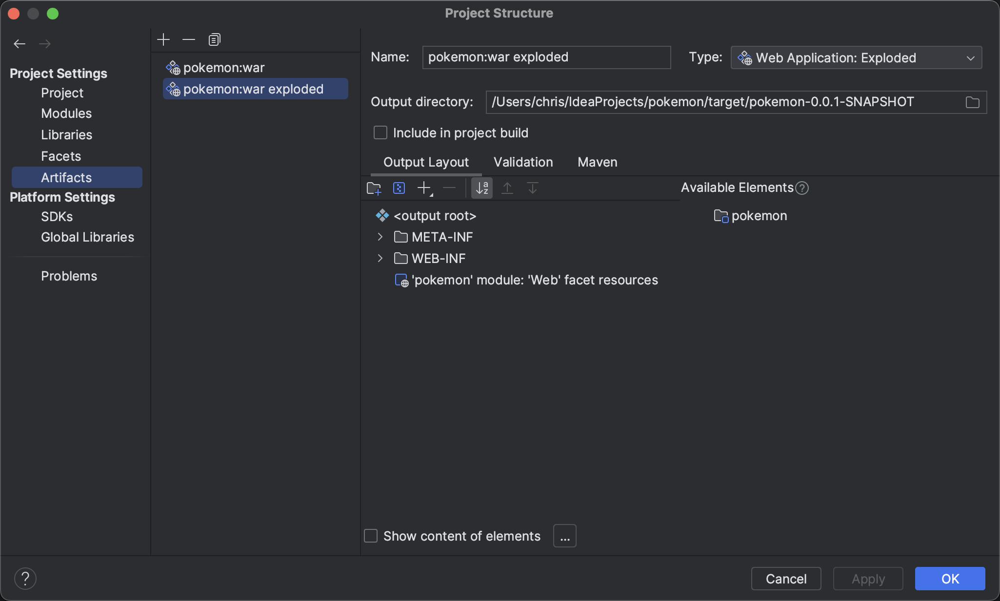
During development, choose a lightweight Tomcat for faster startup. In Edit Configurations..., create a Tomcat Server and select Local. Add the artifact to the Deployment tab.
Note: Change the /pokemon_war_exploded in the Application Context to /. Otherwise, your root path will be http://localhost:8080/pokemon_war_exploded instead of http://localhost:8080/.
If multiple applications are running in the same Tomcat, different contexts can be used to distinguish them. However, since we only have one, we use /.
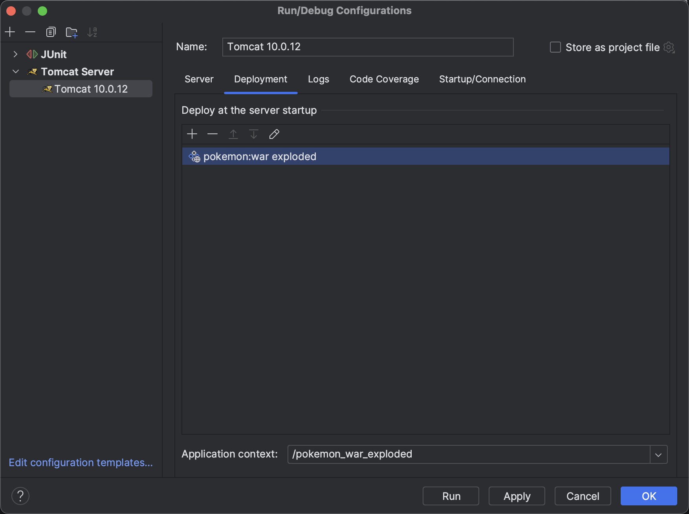
In the Server panel, set both On 'Update' Action and On frame deactivation to Update classes and resources. This allows automatic updates after modifying the code without restarting Tomcat. Note: Hot code updates only succeed when modifying the internal logic of methods. If the class structure is modified (e.g., adding, deleting, or modifying classes, fields, methods, or changing method parameters), hot updates will fail, and Tomcat must be restarted. In After launch, you can set your preferred browser to open automatically after Tomcat starts successfully.
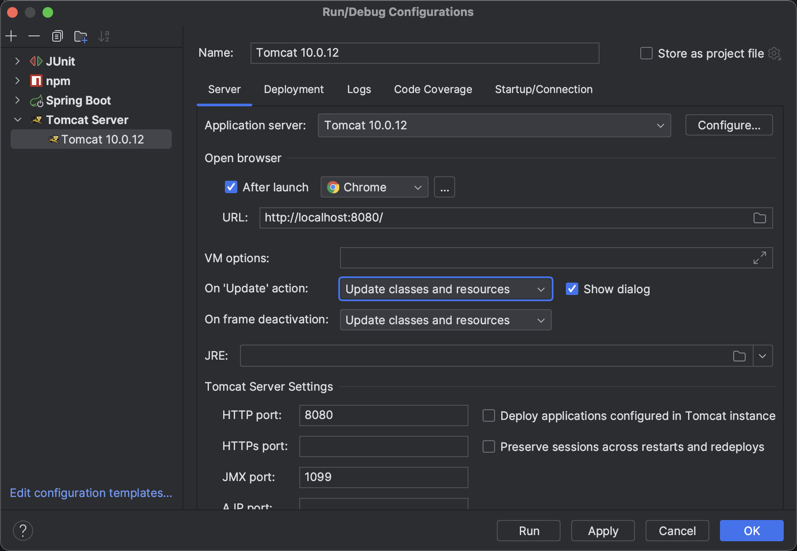
Start the server. If you see Spring outputting information in the console, the startup is successful.
1 |
|
If you only see the following information, it means the Tomcat artifact deployment was successful, but Spring Boot did not start.
1 | [2024-10-13 10:40:45,583] Artifact pokemon:war exploded: Artifact is deployed successfully |
In the Tomcat Catalina Log tab, you will see the following warning:
1 | 13-Oct-2024 10:45:44.580 WARNING [RMI TCP Connection(2)-127.0.0.1] org.apache.tomcat.util.descriptor.web.WebXml.setVersion Unknown version string [5.0]. Default version will be used. |
This error occurs because lower versions of Tomcat do not support higher versions of Spring Boot. I encountered this issue when deploying Spring Boot 3.3.4 with Tomcat 8.5.76. Changing to Tomcat 10.0.12 allowed Spring Boot to start successfully.
In Project Structure, under Module, click New Module, select a React project, and name it web.
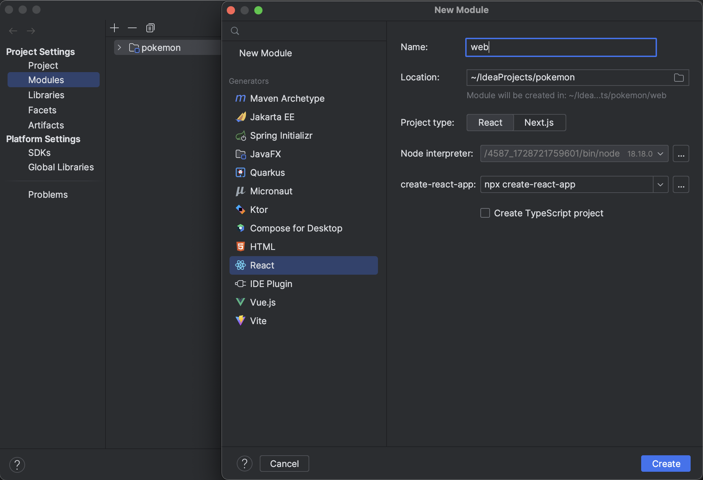
After clicking OK, wait for a while (usually very slow). You can go grab a coffee.
Once the React project is created, a web folder will be created. In Edit Configurations..., add npm, select the start command, and click OK to start.
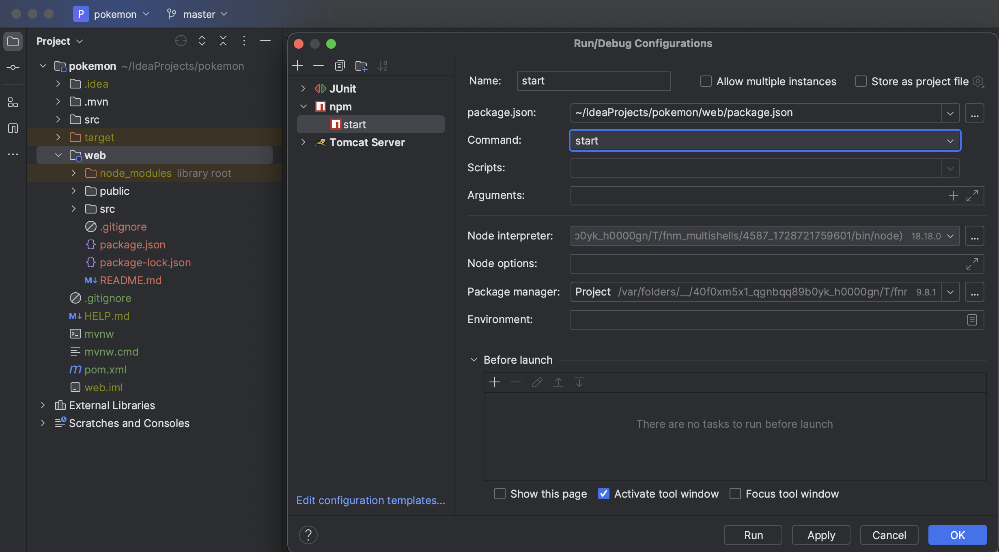
If everything goes well, you will see the following information in the console, and the browser will automatically open http://localhost:3000.
1 | Compiled successfully! |
Create a domain package and create a Pokemon class under it.
1 | package org.chris.pokemon.domain; |
Create a controller package and create a PokemonController class under it.
1 | package org.chris.pokemon.controller; |
After starting, open http://localhost:8080/api/pokemon/list to get the following response:
1 | [ |
Modify web/src/App.js to the following code to attempt to fetch data from the back-end and display it.
1 | import './App.css'; |
Refresh the React page, but unfortunately, it fails. Open the browser’s developer tools and see an error message in the Console.
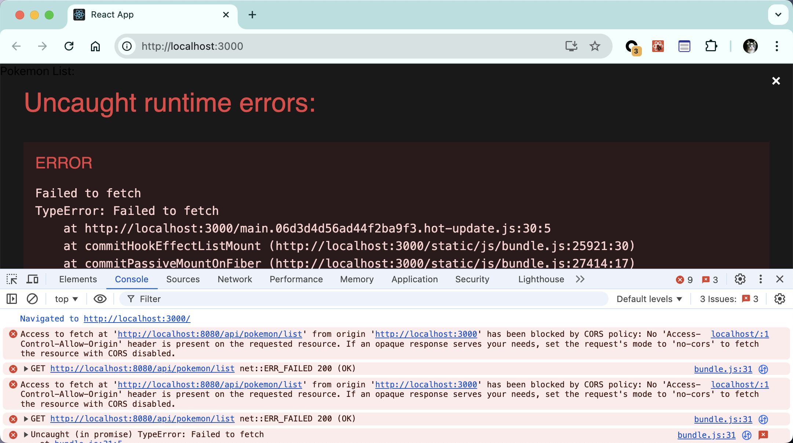
In the Network tab, you can see a CORS error when fetching data:
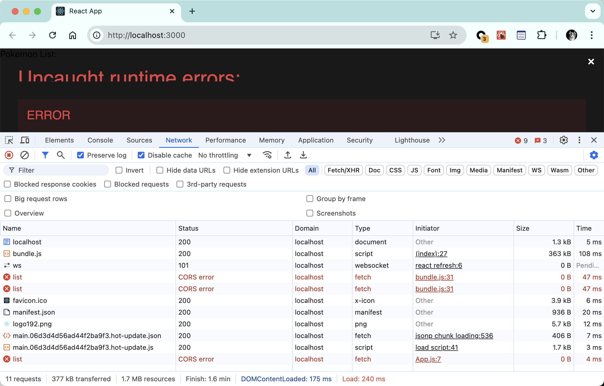What’s going on? The browser’s security policy does not allow cross-origin requests. http://localhost:3000 and http://localhost:8080 are considered different origins. There are many solutions to cross-origin issues, but the simplest way in this project is to forward the request to http://localhost:8080. This way, we only need to access http://localhost:3000.
Create a setupProxy.js file in web/src/. The code below forwards all requests starting with /api to http://localhost:8080.
1 | const {createProxyMiddleware} = require('http-proxy-middleware') |
Then, change the request in App.js from http://localhost:8080/api/pokemon/list to /api/pokemon/list.
1 | import './App.css'; |
Restart npm and refresh the page. We successfully fetched the data. In the Network panel, we can see that the request URL is http://localhost:3000/api/pokemon/list, and the Proxy forwarded the request to http://localhost:8080/api/pokemon/list.
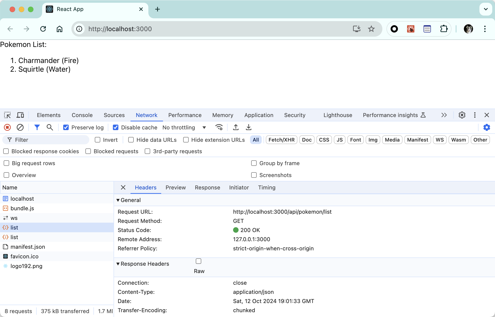
In Edit Configurations..., add an npm run build configuration. Select run for the Command and build for the scripts.
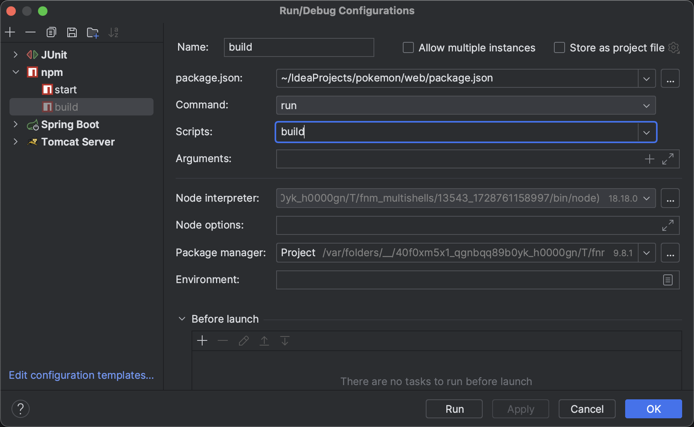
After adding, run the build. npm will place the compiled React files in the web/build folder. You can place all the files under build (excluding the build folder) on an HTTP server to run the React application. However, we do not want to deploy two web servers in production. The back-end web container also has the ability to serve static resources, so we can manage the React files together with Spring Boot.
Copy all files from web/build/ to src/main/resources/static/. Restart Tomcat and open http://localhost:8080. You will see that React runs normally and successfully fetches the data.
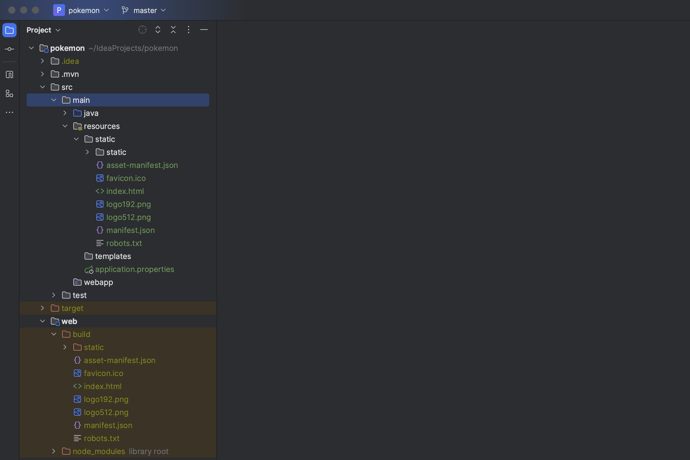
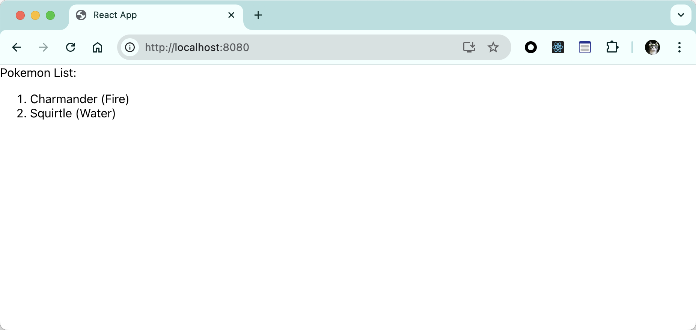
Clicking package under Lifecycle in the Maven panel will package Spring Boot into a WAR file. You can find pokemon-0.0.1-SNAPSHOT.war under the target folder. Deploy this WAR file to the production environment’s web container to run it.
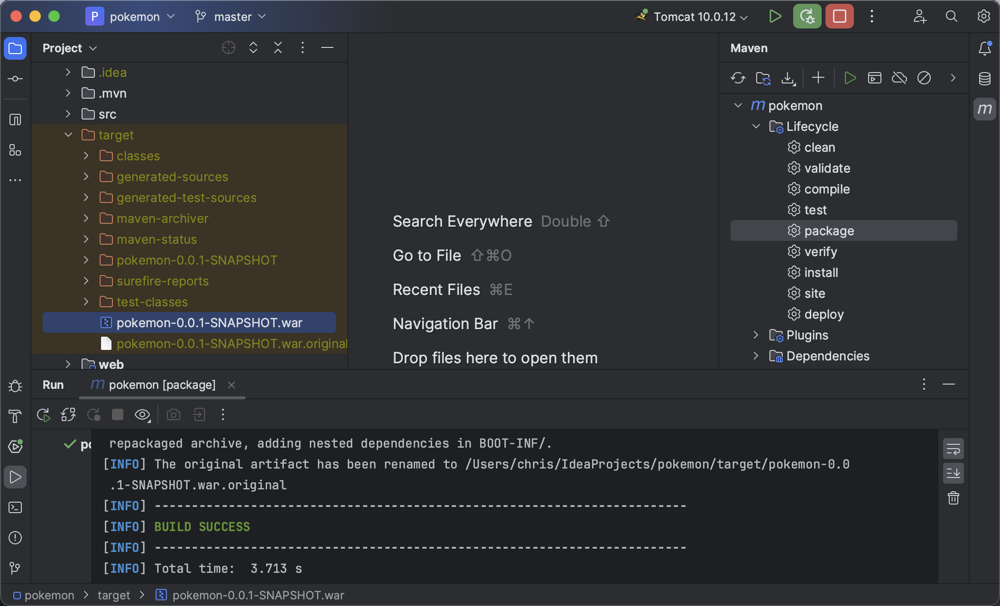
The packaging process requires the following three steps:
npm run build to compile React into web/build/.web/build/ to src/main/resources/static/.package command to generate the WAR file.Why not automate these three steps so that Maven automatically executes the first two steps during packaging?
To make Maven run the npm run build command and copy the compiled front-end files, we need to add two Maven plugins: exec-maven-plugin to run commands and maven-resources-plugin to copy files. Add the following two plugin tags under the project → build → plugins node in pom.xml.
1 | <!-- Plugin to run npm commands --> |
Clear the front-end files copied to src/main/resources/static/ in the previous step, as the plugin will copy the front-end files to target/classes/static/ and package them. There is no need to copy them to src/main/resources/static/ first.
To prevent residual files from causing issues, usually click clean under Lifecycle in the Maven panel to clean the target folder, then click package. After a short wait, you can find the WAR file in the target folder. Make a copy of the WAR file, change its extension to .zip, and open it with a compression tool. You will see that the React files have been copied to WEB-INF/classes/static/ in the WAR file.
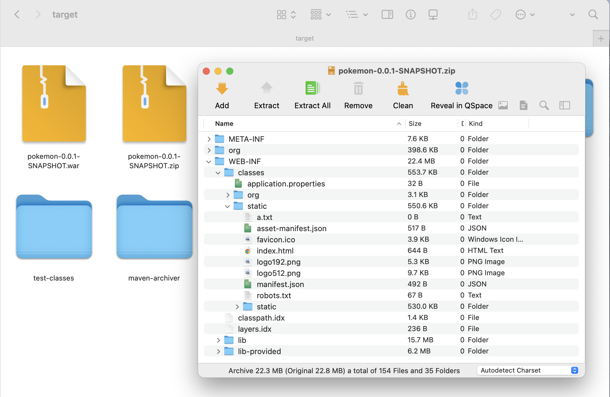
In Edit Configurations…, select Tomcat, click the Copy Configuration button to duplicate the Tomcat configuration, and add Test to the name. In the Deployment tab, delete the web exploded artifact, add External Source..., select the WAR file in the target directory, and change the Application context to /.
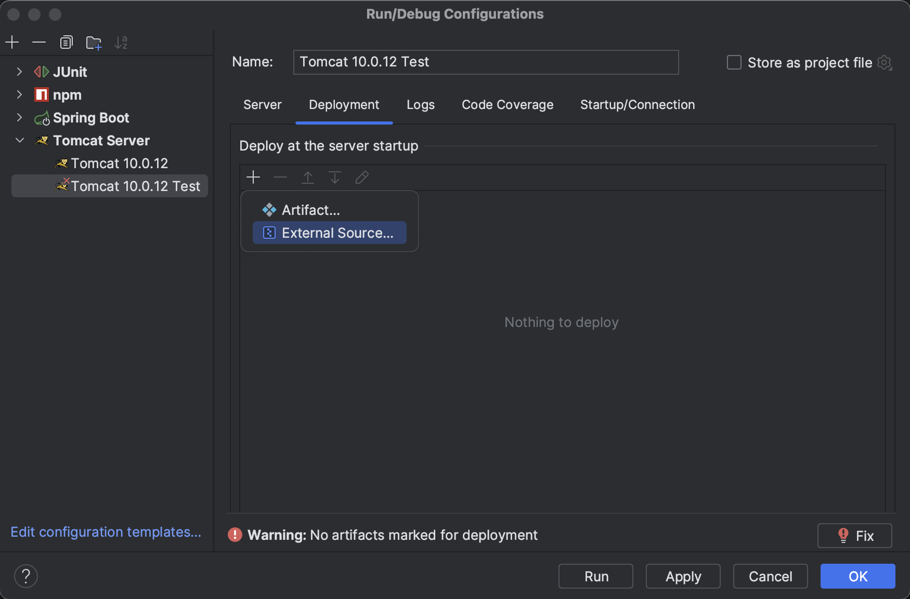
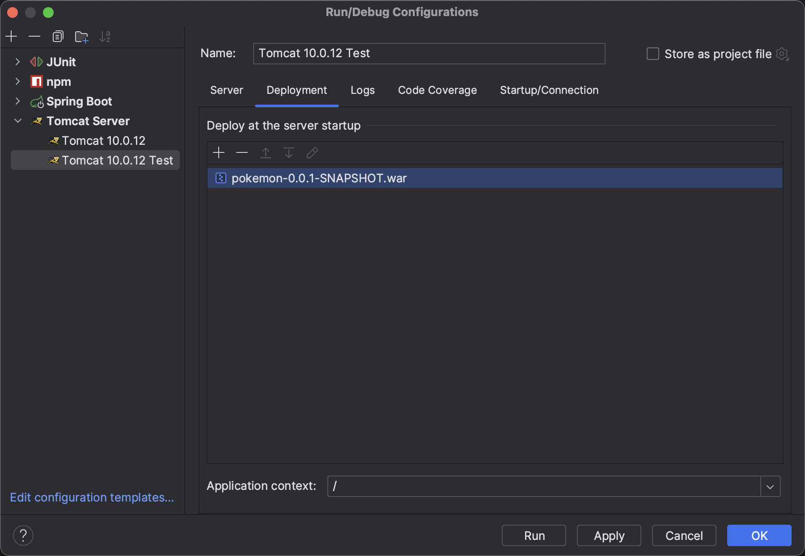
Save and run. The WAR file runs successfully.
This issue does not occur when you run npm and Tomcat locally, but when you package the application into a WAR file and deploy it to a web container, users may encounter a 404 error after clicking a link and refreshing the page. Let’s reproduce this error.
In the Terminal panel of IntelliJ IDEA, execute the following commands. First, navigate to the web directory, then install react-router and react-router-dom. Note: The npm command must be run in the directory containing package.json.
1 | cd web |
Modify web/src/index.js to add the BrowserRouter tag:
1 | import React from 'react'; |
Modify src/App.js to use routing to define two paths and two components:
/ corresponds to the React component Home./about corresponds to the React component About.In actual development, you can place Home and About in different files, export them using export, and only keep the routing in App.
1 | import './App.css'; |
Open http://localhost:3000/ to display the home page with an About link. Clicking About opens a new page, and the URL changes to http://localhost:3000/about. Refreshing the About page also displays correctly.
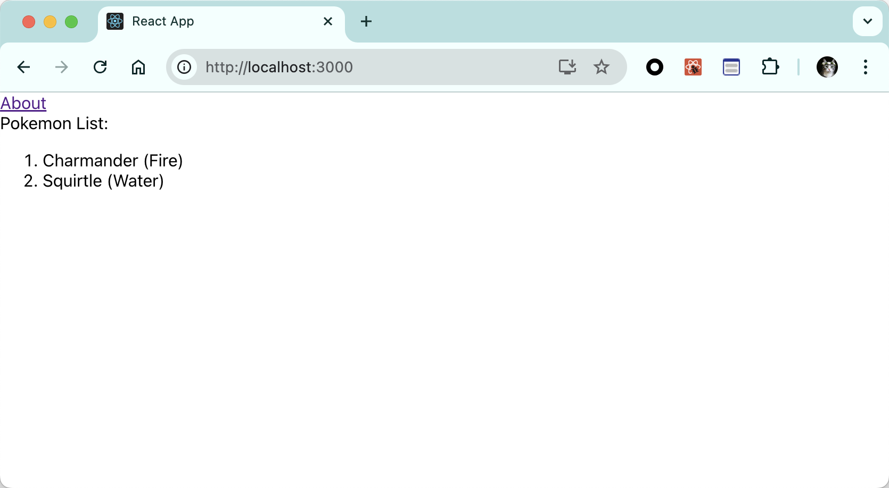
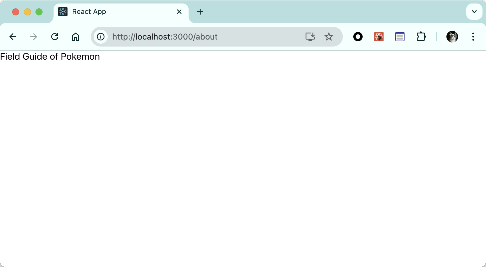
Now, let’s package the application into a WAR file, deploy it to Tomcat Test, and start it. Refresh the browser on the About page, and you will see a 404 error.
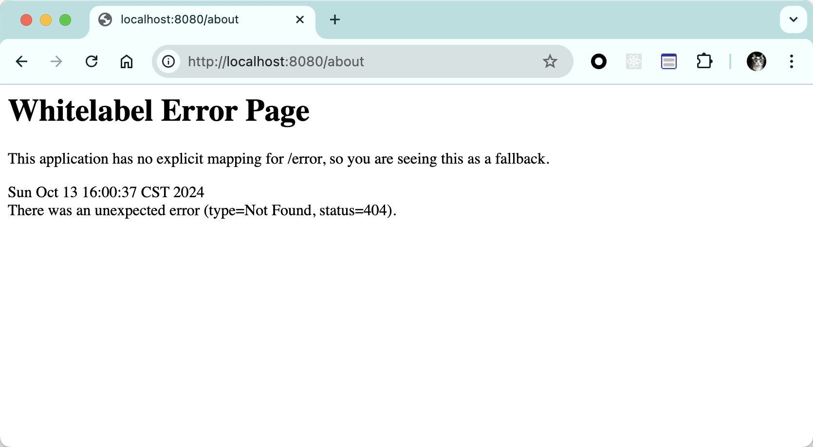
What’s going on?
React is a Single Page Application (SPA). The browser only loads the index.html page throughout the entire session. The content and changes users see are achieved by JavaScript modifying the DOM of index.html. Communication with the server is done through JSON, and new components are rendered locally in the browser.
When we open http://localhost:8080/, we request the resource at path / from Tomcat. Tomcat defaults to serving index.html from static/, which is the initial page of React. The content is a blank page, and React loads JavaScript to render the Home component and display the content. When you click the About link, React Router removes the Home component and displays the About component’s content, modifying the URL without requesting a new page from Tomcat.
When you click the browser’s refresh button, the browser requests the resource at path /about from the server. However, the server does not have /about defined in the Controller, nor does it have a static resource named about in static/. Therefore, it returns a 404 error.
In Spring MVC, resource responses have a priority: first, dynamic resources from the Controller are sought, then static resources from static/. If no static resource is found, a 404 error is returned.
To solve this, we can return index.html by default when no static resource is found. React Router will render the corresponding page based on the browser’s URL.
To implement this logic, we need to add ResourceHandlers in Spring MVC.
Add the following line to application.properties to specify the location of static resources:
1 | spring.web.resources.static-locations=classpath:/static/ |
Create a configuration package and create a WebMvcConfiguration class with the following code. Any path that does not find a resource will return index.html. The back-end will no longer return 404 errors, and paths that do not find resources will be handled by React Router on the front-end.
1 | package org.chris.pokemon.configuration; |
Repackage and redeploy. After refreshing the About page, there is no 404 error, and the About page displays correctly.
End of Article